11个练好吉他封闭和弦的方法！
作者:westguitar 来源:西部吉他网 录入:westguitar
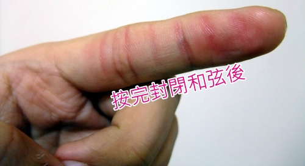
封闭和弦：吉他专有名词?
封闭和弦（Barre Chords）是吉他的专有名词，并非真的有这种和弦。只要食指同时按超过2条以上的弦，就可以称为封闭和弦。封闭和弦是吉他初学者的最大障碍，因为封闭 和弦是1根手指要「同时封住」6条弦，会有一定的难度 (1)。很多初学者，就是过不了封闭和弦这一关，痛苦不堪而放弃吉他的，但喜欢吉他的朋友千万别放弃，请继续坚持下去。
封闭和弦大致又分为半封闭：按2~5条、全封闭：6条全按
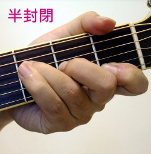 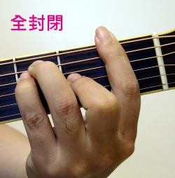
封闭和弦：要练之前先注意吉他弦距
很多时候封闭和弦压不好，并非你的手指有问题，可能是吉他弦 距太高所导致，最好请懂的人来帮你做正确的弦距设定才是。要怎麽判断弦距是否过高呢? 以「民谣吉他来说」，判断方式如下：手压第2格的位置，如果第一格的琴衍与琴弦之间有一点分离，表示上弦枕过高。吉他自然平放，用钢尺或专用工具，测量第 12格琴衍上缘与弦下缘之间的距离
第1弦 1.75~2.0mm，第6弦 2.0~2.25 属于低弦距吉他
第1弦 2.0~2.25mm ，第6弦 2.25~2.5 属于高弦距吉他
范围内都可以接受，万一过低过高都不好
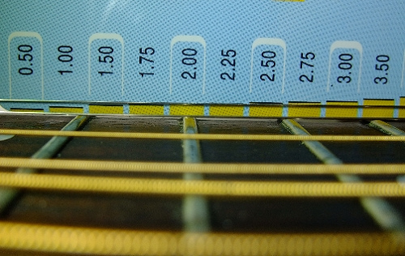
封闭和弦：练习要诀
靠「蛮力」是没用的，要有「巧劲」才行喔~并非使尽全力卯起来压就可以压好封闭和弦的。只要稍微注意一些细节，你也能突破练习的障碍，快速的进入封闭和弦的世界。以下每一种练习方式都可以各别试试看，没有一定要先练哪一种~
1. 夹住琴颈
封闭和弦是以食指跟大拇指「夹住」琴颈的手感，而非开放和弦是「握住」琴颈。
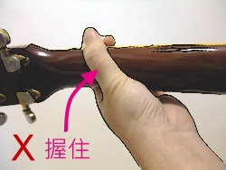 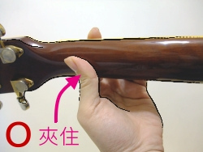
2. 食指位置
试试「食指伸直」用食指稍微靠近虎口「约呈45度」的那一面来压弦。
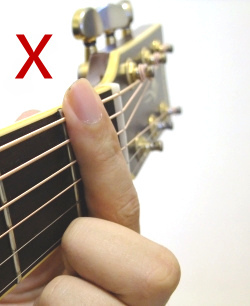 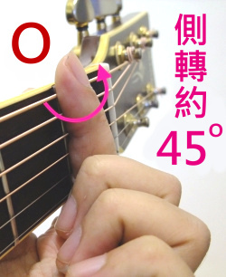
食指正面压弦侧转约45度压弦
3. 大拇指位置
大拇指放在食指「正后方」，可以上下左右的微调，多尝试不同的角度，找出最适合你的位置，压好以后就要记住手感。
4. 中指、小指位置
中指大略垂直，无名指、小指要立起来，不要去碰触到其他弦。
5. 每根手指要尽量靠近琴衍
不管压什麽和弦，手指尽量靠近琴衍
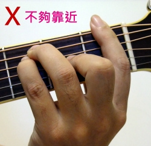 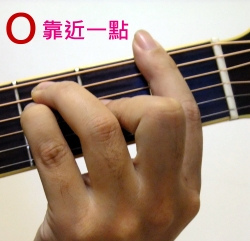
不够靠近琴衍靠近琴衍压弦
6. 手指叠罗汉
採用手指叠罗汉的方式，加强压弦的力道，等手指慢慢适应后，一根一根放开，直到练到单靠食指可以完全封紧。
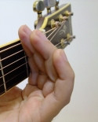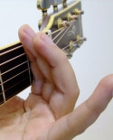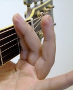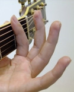
手指全按放开小指放开无名指与小指剩下食指压弦
7. 从第3~5格开始练
如果弦距设定没有做好，第1格会最难压，可以先从从第3~5格开始练，比较不会有挫折感。
8. 食指最后压
这样就可以知道没有压到的弦还剩下几根，心理压力比较不会这麽大。例如：F，食指只要把注意力集中在没压到的1、2、6弦就好。
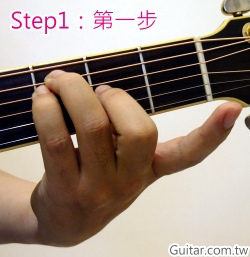 
食指最后压-第一步食指最后压-第二步
9. 吉他竖起来压弦
这可以让手指用最自然的姿势去压弦，等到练熟，在转回正常弹吉他姿势
10. 每一格都试试看
慢慢适应封闭和弦之后，可以从第1格开始，练到第10格，在从第10格，练到第1格，每一格都试试看，每一个音都清楚扎实。去回算一趟，每天习个几趟，手痠就要休息，不要硬撑。
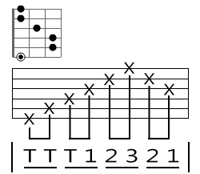
封闭和弦的练习
11. 开放与封闭之间的转换
「开放和弦－＞封闭和弦」的转换，也要OK才行喔，不能只练封闭和弦
「封闭和弦－＞封闭和弦」的转换，有遇到的话，一样要练熟
12. 残酷地狱练习法
吊吉他跑操场 ＜叔叔有练过，小朋友不要学喔